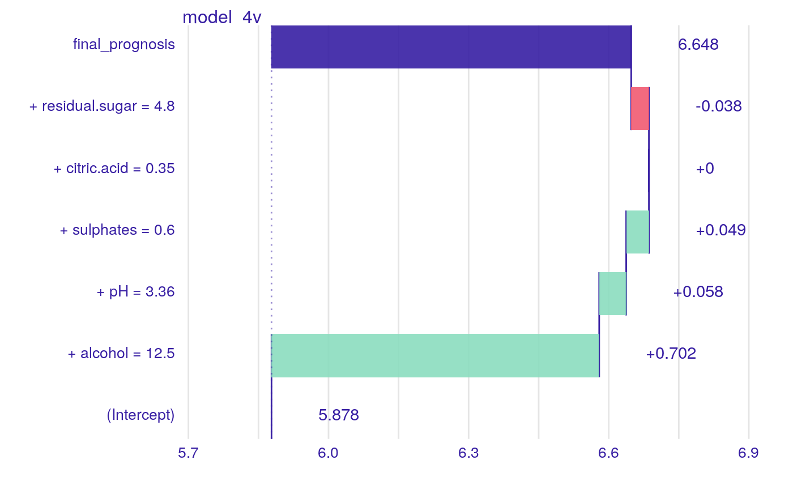
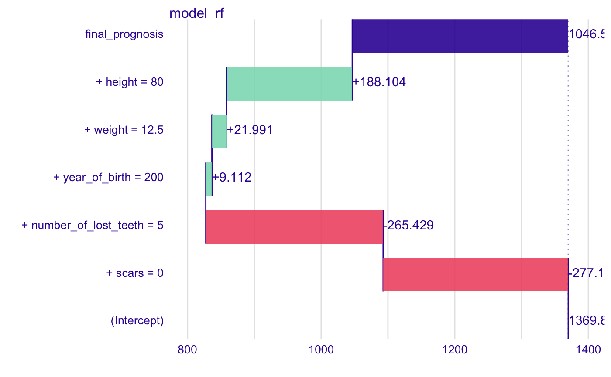
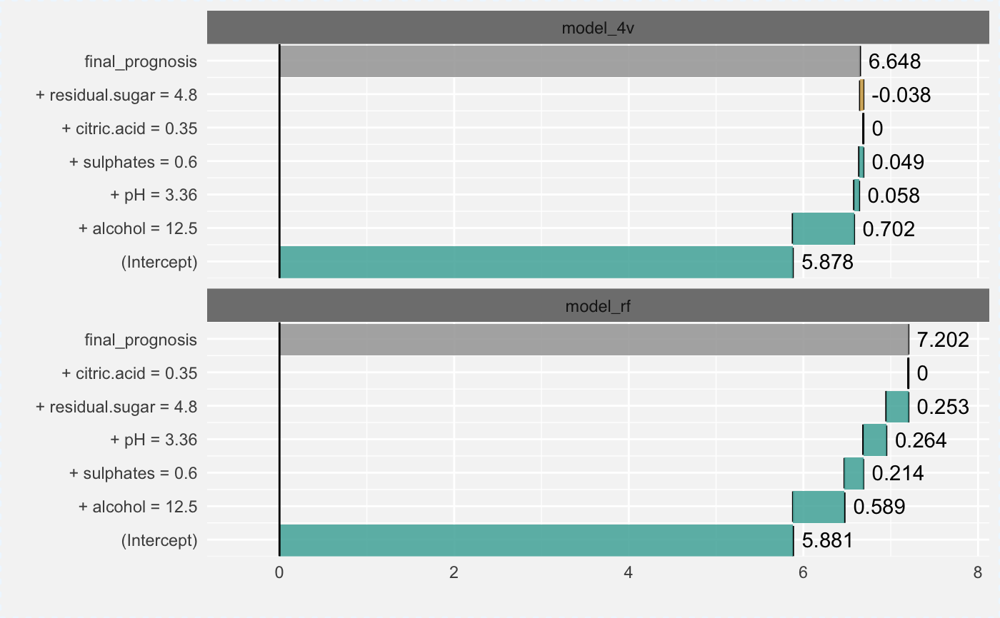
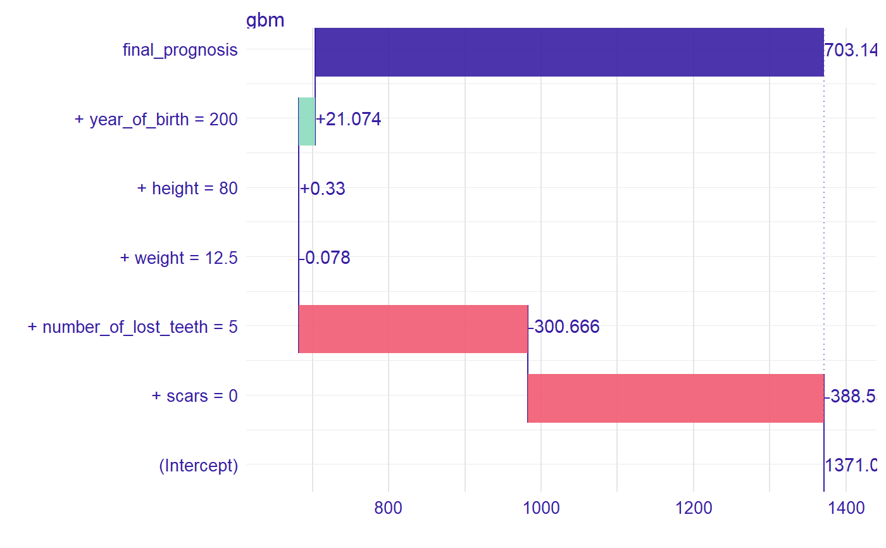
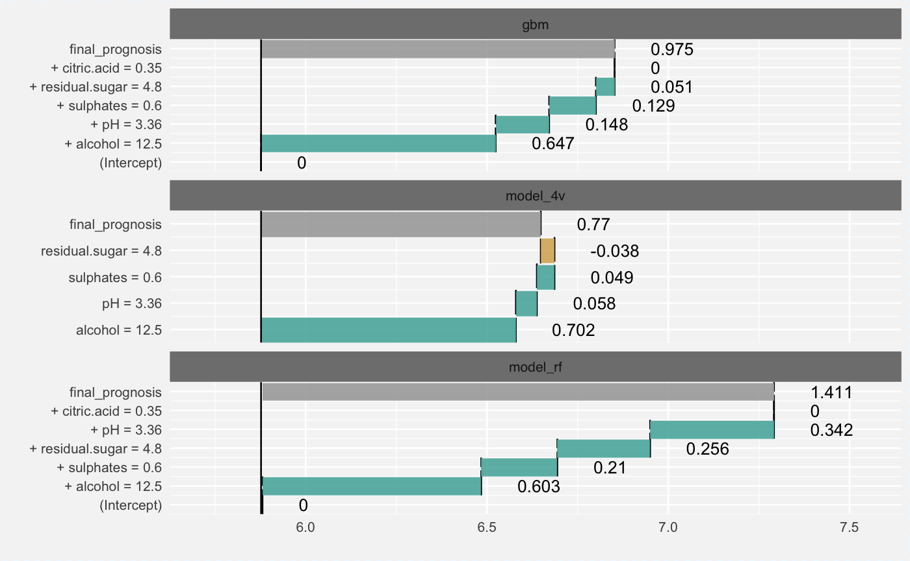

R/plot_prediction_breakdown.R
plot.prediction_breakdown_explainer.RdFunction plot.single_prediction_explainer
plots break down plots for a single prediction.
# S3 method for prediction_breakdown_explainer plot(x, ..., add_contributions = TRUE, vcolors = c(`-1` = "#f05a71", `0` = "#371ea3", `1` = "#8bdcbe", X = "#371ea3"), digits = 3, rounding_function = round)
| x | a single prediction exlainer produced with the |
|---|---|
| ... | other explainers that shall be plotted together |
| add_contributions | shall variable contributions to be added on plot? |
| vcolors | named vector with colors |
| digits | number of decimal places |
| rounding_function | function that is to used for rounding numbers.
It may be |
a ggplot2 object
# \dontrun{ new_dragon <- data.frame(year_of_birth = 200, height = 80, weight = 12.5, scars = 0, number_of_lost_teeth = 5) dragon_lm_model4 <- lm(life_length ~ year_of_birth + height + weight + scars + number_of_lost_teeth, data = dragons) dragon_lm_explainer4 <- explain(dragon_lm_model4, data = dragons, y = dragons$year_of_birth, label = "model_4v")#> Preparation of a new explainer is initiated #> -> model label : model_4v #> -> data : 2000 rows 8 cols #> -> target variable : 2000 values #> -> predict function : yhat.lm will be used ( default ) #> -> predicted values : numerical, min = 541.1056 , mean = 1370.986 , max = 3928.189 #> -> residual function : difference between y and yhat ( default ) #> -> residuals : numerical, min = -5421.316 , mean = -1450.523 , max = 1176.912 #> A new explainer has been created!#> Warning: Please note that 'prediction_breakdown()' is now deprecated, it is better to use 'iBreakDown::break_down()' instead. #> Find examples and detailed introduction at: https://pbiecek.github.io/PM_VEE/breakDown.htmlplot(dragon_lm_predict4)library("randomForest") dragon_rf_model4 <- randomForest(life_length ~ year_of_birth + height + weight + scars + number_of_lost_teeth, data = dragons) dragon_rf_explainer4 <- explain(dragon_rf_model4, data = dragons, y = dragons$year_of_birth, label = "model_rf")#> Preparation of a new explainer is initiated #> -> model label : model_rf #> -> data : 2000 rows 8 cols #> -> target variable : 2000 values #> -> predict function : yhat.randomForest will be used ( default ) #> -> predicted values : numerical, min = 653.0238 , mean = 1369.892 , max = 3148.351 #> -> residual function : difference between y and yhat ( default ) #> -> residuals : numerical, min = -4719.351 , mean = -1449.43 , max = 984.6438 #> A new explainer has been created!dragon_rf_predict4 <- prediction_breakdown(dragon_rf_explainer4, observation = new_dragon) plot(dragon_rf_predict4)library("gbm")#> Warning: package ‘gbm’ was built under R version 3.5.2#># create a gbm model model <- gbm(life_length ~ year_of_birth + height + weight + scars + number_of_lost_teeth, data = dragons, distribution = "gaussian", n.trees = 1000, interaction.depth = 4, shrinkage = 0.01, n.minobsinnode = 10, verbose = FALSE) # make an explainer for the model explainer_gbm <- explain(model, data = dragons, predict_function = function(model, x) predict(model, x, n.trees = 1000))#> Preparation of a new explainer is initiated #> -> model label : gbm ( default ) #> -> data : 2000 rows 8 cols #> -> target variable : not specified! ( WARNING ) #> -> predict function : function(model, x) predict(model, x, n.trees = 1000) #> -> predicted values : numerical, min = 587.8115 , mean = 1371.038 , max = 3561.186 #> -> residual function : difference between y and yhat ( default ) #> A new explainer has been created!# create a new observation exp_sgn <- prediction_breakdown(explainer_gbm, observation = new_dragon) head(exp_sgn)#> variable contribution #> 1 (Intercept) 1371.0376415 #> scars + scars = 0 -388.5560672 #> number_of_lost_teeth + number_of_lost_teeth = 5 -300.6659541 #> weight + weight = 12.5 -0.0783210 #> height + height = 80 0.3300856 #> year_of_birth + year_of_birth = 200 21.0743728 #> variable_name variable_value cummulative sign #> 1 Intercept 1 1371.0376 1 #> scars scars 0 982.4816 -1 #> number_of_lost_teeth number_of_lost_teeth 5 681.8156 -1 #> weight weight 12.5 681.7373 -1 #> height height 80 682.0674 1 #> year_of_birth year_of_birth 200 703.1418 1 #> position label #> 1 1 gbm #> scars 2 gbm #> number_of_lost_teeth 3 gbm #> weight 4 gbm #> height 5 gbm #> year_of_birth 6 gbmplot(exp_sgn)exp_sgn <- prediction_breakdown(explainer_gbm, observation = new_dragon, baseline = 0) plot(exp_sgn)# }